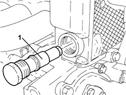
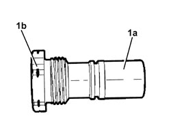
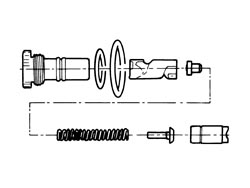
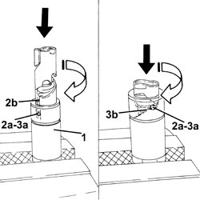
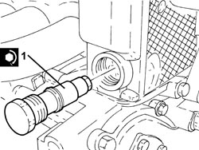
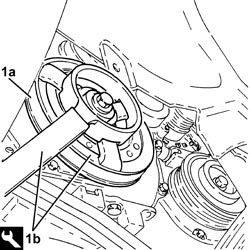

1032C33 TIMING SYSTEM FIXED HYDRAULIC TENSIONER - R R
- Path
- Procedures > 10 ENGINE > 1032 TIMING SYSTEM > 1032C TIMING SYSTEM TENSIONERS > 1032C33 TIMING SYSTEM FIXED HYDRAULIC TENSIONER - R R
- Kind
- repair procedure (removal / refitting; the operation number is the code)
- Applies to
- engines: 2.2 JTS; all production periods
- Interactive page
- https://sloeber94.github.io/elrnDB-aBrrSpdr/en/#/946001862
Applies to: engines: 2.2 JTS; all production periods
 Removing
Removing
 Refitting
Refitting- Position the vehicle on a lift.
Op. 1048A28 VACUUM AIR CIRCUIT RESONATOR PIPE - R+R
Op. 1008B10 POWER UNIT FRONT SUPPORT FLEXIBLE MOUNTING (TIMING SIDE) - REPLACE
1. Unscrew the timing system fixed hydraulic tensioner and remove it.

Applies to: engines: 2.2 JTS; all production periods
1. If no mark (1b) is present on the fixed timing chain hydraulic tensioner (1a), replace the tensioner with a new unit including a new mobile chain tensioner pad.

Applies to: engines: 2.2 JTS; all production periods
- The following drawing shows the fixed timing chain hydraulic tensioner disassembled.

Applies to: engines: 2.2 JTS; all production periods
Refitting
Removing- Before refitting, the timing chain fixed hydraulic tensioner must be preloaded as described below.
1. Position the piston in a vice with protective jaws, holding by the square end.
2. Insert the piston into the tensioner case by pressing and turning as shown in the figure until the pin (2a) fits into the groove (2b).
3. Press and simultaneously turn the piston until pin (3a) fits into groove (3b).
- Insert the assembled piston into the tensioner body.

Applies to: engines: 2.2 JTS; all production periods
1. Refit the timing chain fixed hydraulic tensioner into its seat and tighten to the specified torque.
Component | Fastening | dia | Value (daNm) | Validity |
|---|---|---|---|---|
Fixed hydraulic timing system tensioner | - | M27 | 7.5 | 1.9 JTS 2.2 JTS |

Applies to: engines: 2.2 JTS; all production periods
Op. 4450B04 RIGHT FRONT WHEEL - R.R
Op. 7055B66 ENGINE COMPARTMENT DUST COVER IN RIGHT FRONT WHEEL ARCH - R.R.
1. Move the timing system hydraulic tensioner to operating position by turning the crankshaft pulley (1a) quickly anticlockwise using tool (1b).
Tool | Description | Function | Validity |
|---|---|---|---|
2000001000 | Counter-torque | Loosen/ tighten bolt securing crankshaft pulley | 1.9 JTS 2.2 JTS |

Applies to: engines: 2.2 JTS; all production periods
Op. 7055B66 ENGINE COMPARTMENT DUST COVER IN RIGHT FRONT WHEEL ARCH - R.R.
Op. 4450B04 RIGHT FRONT WHEEL - R.R
Op. 1008B10 POWER UNIT FRONT SUPPORT FLEXIBLE MOUNTING (TIMING SIDE) - REPLACE
Op. 1048A28 VACUUM AIR CIRCUIT RESONATOR PIPE - R+R
- Remove the vehicle from the lift.